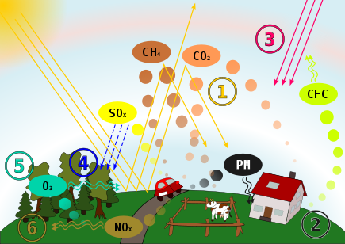
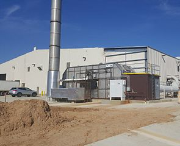

POLLUTANTS
An air pollutant is a material in the air that can have adverse effects on humans and the ecosystem.[87] The substance can be solid particles, liquid droplets, or gases, and often takes the form of an aerosol (solid particles or liquid droplets dispersed and carried by a gas).[88] A pollutant can be of natural origin or man-made. Pollutants are classified as primary or secondary. Primary pollutants are usually produced by processes such as ash from a volcanic eruption.
Other examples include carbon monoxide gas from motor vehicle exhausts or sulfur dioxide released from factories. Secondary pollutants are not emitted directly. Rather, they form in the air when primary pollutants react or interact. Ground level ozone is a prominent example of a secondary pollutant. Some pollutants may be both primary and secondary: they are both emitted directly and formed from other primary pollutants.

Primary pollutants
- Ammonia: Emitted mainly by agricultural waste. Ammonia is a compound with the formula NH3. It is normally encountered as a gas with a characteristic pungent odor. Ammonia contributes significantly to the nutritional needs of terrestrial organisms by serving as a precursor to foodstuffs and fertilizers. Ammonia, either directly or indirectly, is also a building block for the synthesis of many pharmaceuticals. Although in wide use, ammonia is both caustic and hazardous.[89] In the atmosphere, ammonia reacts with oxides of nitrogen and sulfur to form secondary particles.
- Carbon dioxide (CO2): Carbon dioxide is a natural component of the atmosphere, essential for plant life and given off by the human respiratory system.[91] It is potentially lethal at very high concentrations (typically 100 times "normal" atmospheric levels).[92][93] Although the World Health Organization recognizes CO2 as a climate pollutant, it does not include the gas in its Air Quality Guidelines or set recommended targets for it.[94] Because of its role as a greenhouse gas, CO2 has been described as "the worst climate pollutant".[95] Statements such as this refer to its long-term atmospheric effects rather than shorter-term effects on such things as human health, food crops, and buildings. This question of terminology has practical consequences, for example, in determining whether the U.S. Clean Air Act (which is designed to improve air quality) is deemed to regulate CO2 emissions.[96] That issue was resolved in the United States by the Inflation Reduction Act of 2022, which specifically amended the Clean Air Act "to define the carbon dioxide produced by the burning of fossil fuels as an 'air pollutant.'"[97] CO2 currently forms about 410 parts per million (ppm) of earth's atmosphere, compared to about 280 ppm in pre-industrial times,[98] and billions of metric tons of CO2 are emitted annually by burning of fossil fuels.[99] CO2 increase in earth's atmosphere has been accelerating.[100] CO2 is an asphyxiant gas and not classified as toxic or harmful in general.[101] Workplace exposure limits exist in places like UK (5,000 ppm for long-term exposure and 15,000 ppm for short-term exposure).[93] Natural disasters like the limnic eruption at Lake Nyos can result in a sudden release of huge amount of CO2 as well.
- Carbon monoxide (CO): CO is a colorless, odorless, toxic gas.[103] It is a product of combustion of fuel such as natural gas, coal or wood. Vehicular exhaust contributes to the majority of carbon monoxide let into the atmosphere. It creates a smog type formation in the air that has been linked to many lung diseases and disruptions to the natural environment and animals.
- Chlorofluorocarbons (CFCs): Emitted from goods that are now prohibited from use; harmful to the ozone layer. These are gases emitted by air conditioners, freezers, aerosol sprays, and other similar devices. CFCs reach the stratosphere after being released into the atmosphere.[104] They interact with other gases here, causing harm to the ozone layer. UV rays are able to reach the earth's surface as a result of this. This can result in skin cancer, eye problems, and even plant damage.
- Nitrogen oxides (NOx): Nitrogen oxides, particularly nitrogen dioxide, are expelled from high temperature combustion, and are also produced during thunderstorms by electric discharge. They can be seen as a brown haze dome above or a plume downwind of cities. Nitrogen dioxide is a chemical compound with the formula NO2. It is one of several nitrogen oxides. One of the most prominent air pollutants, this reddish-brown toxic gas has a characteristic sharp, biting odor.
- Persistent organic pollutants, which can attach to particulates. Persistent organic pollutants are organic compounds that are resistant to environmental degradation due to chemical, biological, or photolytic processes (POPs). As a result, they've been discovered to survive in the environment, be capable of long-range transmission, bioaccumulate in human and animal tissue, biomagnify in food chains, and pose a major threat to human health and the ecosystem.
- Sulfur oxides (SOx): particularly sulfur dioxide, a chemical compound with the formula SO2. SO2 is produced by volcanoes and in various industrial processes. Coal and petroleum often contain sulfur compounds, and their combustion generates sulfur dioxide. Further oxidation of SO2, usually in the presence of a catalyst such as NO2, forms H2SO4, and thus acid rain is formed. This is one of the causes for concern over the environmental impact of the use of these fuels as power sources.
- Volatile organic compounds (VOC): VOCs are both indoor and outdoor air pollutants.[114] They are categorized as either methane (CH4) or non-methane (NMVOCs). Methane is an extremely efficient greenhouse gas which contributes to enhanced global warming. Other hydrocarbon VOCs are also significant greenhouse gases because of their role in creating ozone and prolonging the life of methane in the atmosphere. This effect varies depending on local air quality. The aromatic NMVOCs benzene, toluene and xylene are suspected carcinogens and may lead to leukemia with prolonged exposure. 1,3-butadiene is another dangerous compound often associated with industrial use.
SEcondary pollutant

- Ground level ozone (O3): Ozone is created when NOx and VOCs mix. It is a significant part of the troposphere.[115] It's also an important part of the ozone layer, which can be found in different sections of the stratosphere. Photochemical and chemical reactions involving it fuel many of the chemical activities that occur in the atmosphere during the day and night. It is a pollutant and a component of smog that is produced in large quantities as a result of human activities (mostly the combustion of fossil fuels).
- Peroxyacetyl nitrate (C2H3NO5): similarly formed from NOx and VOCs.

- Photochemical smog: particles are formed from gaseous primary contaminants and chemicals.[117] Smog is a type of pollution that occurs in the atmosphere. Smog is caused by a huge volume of coal being burned in a certain region, resulting in a mixture of smoke and sulfur dioxide.[118] Modern smog is usually caused by automotive and industrial emissions, which are acted on in the atmosphere by UV light from the sun to produce secondary pollutants, which then combine with the primary emissions to generate photochemical smog.
Other pollutants
There are many other chemicals classed as hazardous air pollutants. Some of these are regulated in the USA under the Clean Air Act and in Europe under numerous directives (including the Air "Framework" Directive, 96/62/EC, on ambient air quality assessment and management, Directive 98/24/EC, on risks related to chemical agents at work, and Directive 2004/107/EC covering heavy metals and polycyclic aromatic hydrocarbons in ambient air)